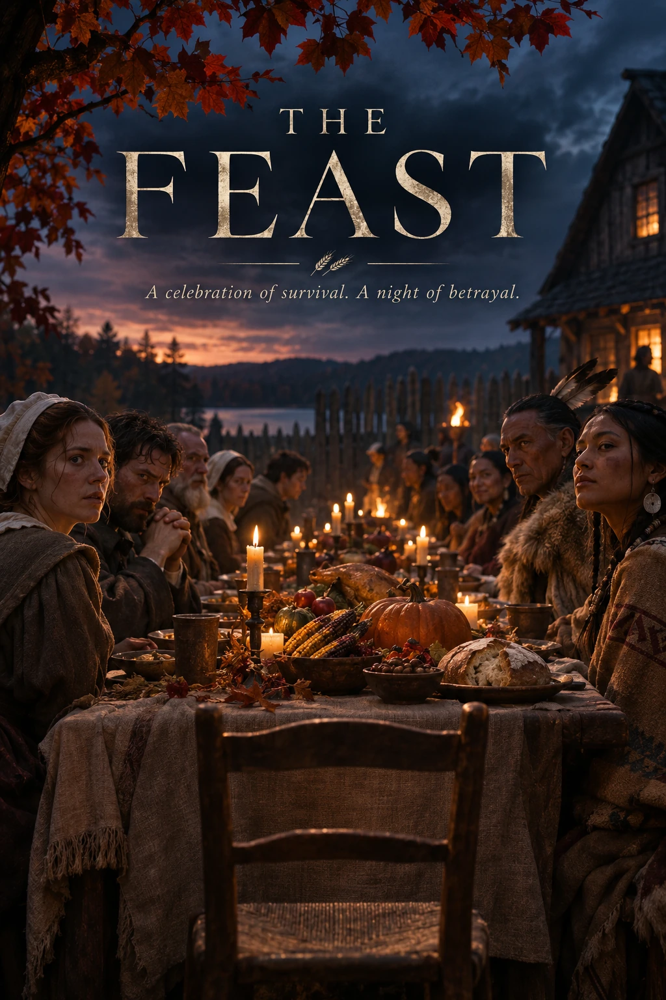

What If?
The Unmade Shelf.
Sometimes a movie gives us an idea for another movie. These are original concepts: a premise, a feeling, a story we’d love to see come alive. Pull one from the shelf.

Imagined historical psychological horror
The Feast
What if the first Thanksgiving were a horror movie?

Imagined generational psychological horror
The Inheritance
They inherited the land. Not the promise.
A place for the next idea.
A small shelf of possibilities. Each concept has its own page to read, talk about, and share. These are imagined films, separate from our reviews of movies we’ve watched.